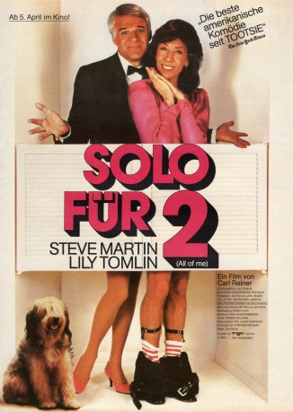

#11010 Solo für zwei
Alternativ: All of Me (Englischer Titel)
 
 IMDB-Wertung: 6.7 / 10
IMDB-Wertung: 6.7 / 10  Metascore: 0
Metascore: 0 
Auf dem Roman „Me Two“ von Edwin Davis basierende Komödie. Der Anwalt Roger Cobb soll das Testament der todkranken Millionärin formulieren. Diese möchte ihre Seele mit Hilfe eines Gurus in den Körper ihrer Erbin versetzen, der jungen Terry Hoskins. Doch auf einmal kontrolliert ihre Seele die Hälfte von Cobbs Körper.
Jahr: 1984
Dauer: 87 Minuten
FSK: 16
Land: USA Studio: Universal PicturesTonspuren: DD2.0 - ,
Untertitel:
Auflösung: 1080p (1920x1040) Größe: 4956 MB
Genre: Komödie, Fantasy, Liebe
Regisseur:  Carl Reiner
Carl Reiner
Drehbuch: Edwin Davis, Henry Olek, Phil Alden Robinson
Soundtrack: Patrick Williams
Darsteller:
 Steve Martin als Roger Cobb
Steve Martin als Roger Cobb Lily Tomlin als Edwina Cutwater
Lily Tomlin als Edwina Cutwater- Victoria Tennant als Terry Hoskins
- Madolyn Smith Osborne als Peggy Schuyler
 Richard Libertini als Prahka Lasa
Richard Libertini als Prahka Lasa Dana Elcar als Burton Schuyler
Dana Elcar als Burton Schuyler Jason Bernard als Tyrone Wattell
Jason Bernard als Tyrone Wattell- Selma Diamond als Margo
 Eric Christmas als Fred Hoskins
Eric Christmas als Fred Hoskins Gailard Sartain als Fulton Norris
Gailard Sartain als Fulton Norris Neva Patterson als Gretchen
Neva Patterson als Gretchen Michael Ensign als Mr. Mifflin
Michael Ensign als Mr. Mifflin Nan Martin als Divorce Lawyer
Nan Martin als Divorce Lawyer Basil Hoffman als Court Clerk
Basil Hoffman als Court Clerk- Harvey Vernon als Judge
- Teddy Edwards als Bass Drum
- Peggy Feury als Dr. Betty Ahrens
- Hedley Mattingly als Grayson
- Stu Black als Police Officer
- Marilyn Tokuda als Receptionist
- David Byrd als Minister
- Nicholas Shields als Hardhat
 Bill Saito als Security Guard
Bill Saito als Security Guard- Neil Elliot als Cabbie
- Jillian Scott als Courtroom Spectator
- Judy Nagy als Nurse
- Ronn Wright als Cook
- Jim Welch als James Welsh IV
- Benny Booker als Tuba
- Joe Darensbourg als Clarinet
- Leo Dejan als Trumpet
- John Ewing als Trombone
- Herbet Permillion als Trumpet
- Gus Wright als Snare Drum
- Michael George als Musician (uncredited)
- Alton Purnell als Grand Marshall (uncredited)
Datei: X:\1984\Solo für zwei (1984, FSK16, 1920x1040).mkv seit 16.04.2019
Festplatte: HD 1980-1986
 Es gibt insgesamt 46 Filme in der Gruppe '1984'
Es gibt insgesamt 46 Filme in der Gruppe '1984'